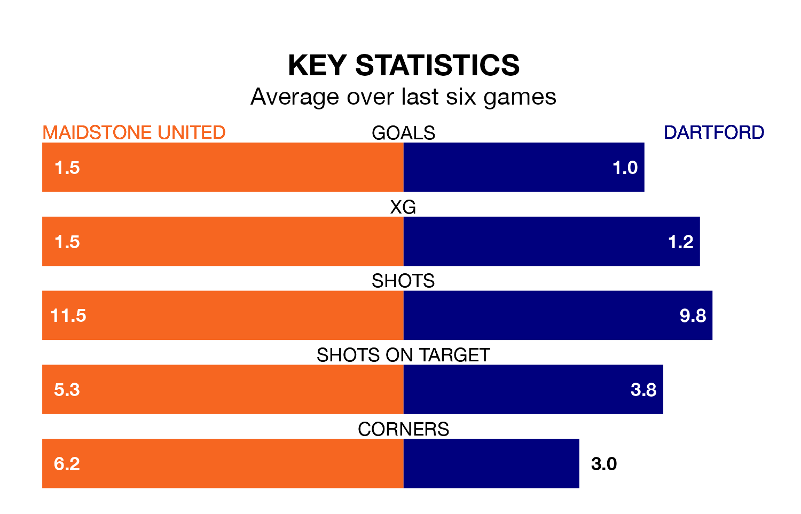

Dartford travel to Maidstone United on late Tuesday in National League North and South.
The visitors come into the game on the back of a win in their last match, having beaten Welling United 1-0 away, with a goal from Richard Chin.
Stones, meanwhile, drew their last match, 1-1 against Tonbridge Angels, with their goal scored by Matt Rush.
Dartford are zero in the table after 26 games, of which they have won nine and drawn seven, earning 34 points.
Maidstone are nine places behind the Darts in ninth, with 12 wins and seven draws putting them on 43 points.
In Levi Amantchi, United have one of the league's most on-form strikers so far this season. He has notched 12 goals in 17 appearances, to sit fifth in the scoring charts.
His goal rate of one every 97 minutes is much quicker than that of Luke Coulson, the away team's top scorer with a goal every 330 minutes, and a total of six goals in 23 games.
In the last five years, Maidstone and Dartford have played each other on eight occasions. Maidstone won four of them, Dartford two, and they drew twice.
On average, Stones scored 1.4 goals and the Darts 1.1 in those matches.
Their last meeting was on November 18, when Maidstone won 1-0 away.
With 39 goals in 26 games so far this season, Dartford are scoring more than average in the league with 1.5 goals per game. But they are conceding more than average too, letting in 39 goals at a rate of 1.5 per game.
Stones, meanwhile, are average scorers, with 1.4 goals per game. They have conceded 1.2 goals per game.
The hosts are in mixed form in National League North and South, with two wins and a draw from their last six games.
And also with two wins and a draw over that period, Dartford's form is identical – they have both taken seven points from 18.
Updated: 11:31, 09/01/24